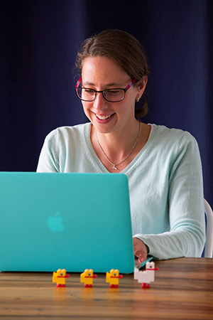

 <div class="main">
        	<div class="container">

			<div class="row">
        <div class="col-md-1"></div>
               <div class="col-md-5">
              <p>Cat has always been passionate about learning, teaching and IT; and has a keen interest in everything web.</p>
              <p>
She spent seven years teaching Senior Secondary computing and programming.
In her spare time she develops teaching and learning resources. Her YouTube channel with tutorials on how to code in Java has a steadily increasing subscriber base, and is a great opportunity to assist learners from all walks of life.</p>
<p>Cat remains passionate about teaching and learning, but shifted her career focus to pursue her interest in web development. She now enjoys working closely with clients to develop beautiful, simple and functional websites.</p>

            </div>
            <div class="col-md-5" align="center">
               
              
            </div>
            <div class="col-md-1"></div>
          </div>

            </div>
        </div>